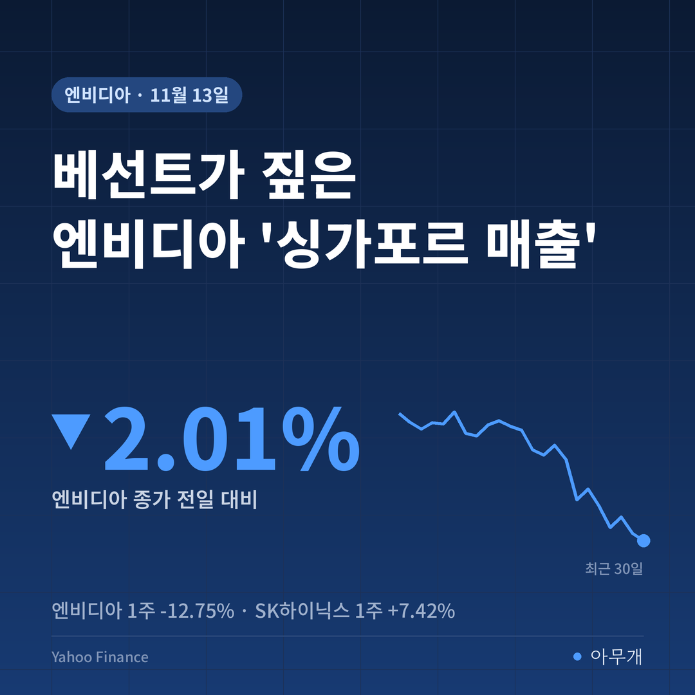
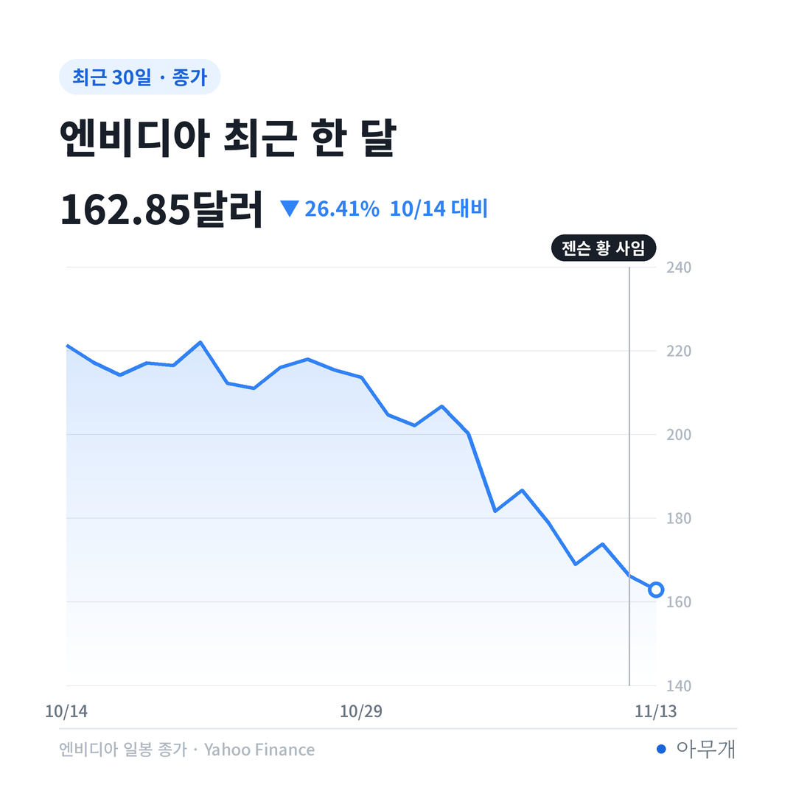
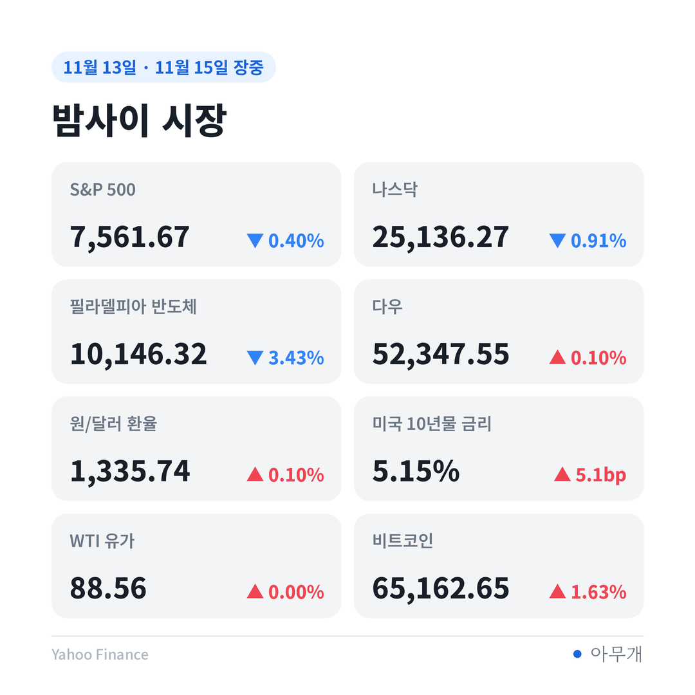

사진·영상 넣기 (본문 순서대로)
📷 사진 1

▲
📷 사진 2

▲
📷 사진 3

▲
📷 사진 4

▲
📷 사진 1 자리
일요일 아침 방송에서 나온 세 가지
15일(현지) 스콧 베선트 재무장관이 폭스뉴스 일요일 아침 프로그램에 나와 엔비디아를 정면으로 겨냥했어요. 요구는 세 갈래였어요[1][2].
📷 사진 2 자리
| 베선트가 한 말 | 요지 |
|---|---|
| 새 CEO | 회사 밖에서 찾아야 한다[1][2] |
| 판매 관행 | 불법으로 보이는 판매로 매출·이익을 부풀렸는지 묻겠다[1][2] |
| 기한 | 이사회와 외부 법률 자문단의 답을 열흘 안에 받아야 한다[1] |
같은 날 파이낸셜타임스(FT)는 정반대 방향의 소식을 전했어요. 젠슨 황 전 CEO가 측근들과 복귀 가능성을 논의했고 측근들은 실리콘밸리 경영자들을 모아 이사회와 백악관을 설득하려 한다는 보도예요[1][6]. 재무장관은 '외부 인사', 창업자 쪽은 '복귀'를 말하는 셈이라 이사회가 낼 답은 더 어려워졌어요.
| 구분 | 내용 | 성격 |
|---|---|---|
| 베선트 발언 | 외부 CEO, 열흘 기한[1][2] | ✅ 방송 발언 |
| 지역 매출 기준 변경 | 2025년 11월부터 고객사 본사 기준[1][2] | ✅ 회사 공시 |
| 황 복귀 논의 | 측근과 논의, 백악관 설득 계획[1][6] | 🗣️ FT 보도 |
| 매출 부풀리기 | 베선트의 질문[2] | 🗣️ 확인된 사실 아님 |
| 메가스피드 우회 | 칩이 싱가포르 업체를 거쳐 중국으로[1][2] | ⚠️ 의혹, 미 당국 조사 |
18%였던 싱가포르, 지금 실적표엔 없는 이유
베선트가 짚은 건 숫자 하나예요. 중국 직접 판매가 줄어드는 동안 청구지가 싱가포르인 매출이 늘었고 그 뒤 회사가 싱가포르 매출을 따로 공개하지 않았다는 지적이에요[1][2].
엔비디아의 2025 회계연도 연차보고서(10-K)를 열어 보면 크기가 보여요. 전체 매출 1,304억9,700만 달러 가운데 싱가포르 청구 매출이 236억8,400만 달러였어요[3]. 약 18%예요. 2025년 7월까지의 분기에는 이 비중이 22%로 올라갔어요[4].
회사는 당시 공시에서도 단서를 달았어요. 지역별 매출은 고객이 대금을 청구받는 곳 기준이고 최종 고객이나 배송지와 다를 수 있다는 설명이에요[3]. 싱가포르는 큰 고객들이 대금 청구를 모아 두는 곳이라는 뜻이에요.
그러다 2025년 11월 분기 공시부터 기준이 바뀌었어요. 청구지 대신 고객사 본사 소재지로 지역을 나누고 이쪽이 매출 분포를 더 잘 보여 준다고 회사는 설명했어요[1][2]. 이 기준에서는 싱가포르 줄이 따로 보이지 않아요.
산수로 크기를 가늠해 보면 이래요. 월가가 보는 3분기 매출은 1,092억 달러인데[5], 예전처럼 22%가 싱가포르 청구분이라면 약 240억 달러예요. 다만 지금 기준의 실적표에는 이 줄이 없어서, 17일 발표에서 베선트의 질문에 숫자로 답하려면 회사가 따로 설명해야 해요.
엔비디아만 빠진 일주일
엔비디아는 13일 162.85달러(-2.01%)로 한 주를 마쳤어요. 1주 -12.75%, 1달 -26.41%예요. 같은 13일 필라델피아 반도체지수는 -3.43%였지만 1주로 보면 +8.05%예요.
📷 사진 3 자리
| 종목·지표 | 13일 종가 | 전일 대비 | 1주 |
|---|---|---|---|
| 엔비디아 | 162.85달러 | -2.01% | -12.75% |
| 마이크론 | 778.31달러 | -2.52% | +12.80% |
| TSMC | 398.73달러 | -1.67% | +6.20% |
| 필라델피아 반도체 | 10,146.32 | -3.43% | +8.05% |
| 미국 10년물 금리 | 5.154% | +5.1bp | +29.5bp |
한 주 동안 엔비디아에서 빠진 돈이 반도체 전체를 떠나지 않았다는 신호예요. 메모리·파운드리 쪽은 오히려 올랐어요. 시장이 사건을 '엔비디아 경영진 문제'로 좁혀 보고 AI 서버 수요 자체는 그대로라고 판단한 흔적이에요.
부담은 채권에서 커지고 있어요. 미국 10년물 금리는 5.154%로 1주 사이 +29.5bp 올랐어요. 금리가 오를수록 미래 이익을 끌어다 쓰는 성장주 값은 무거워져요. 실적이 조금만 기대에 못 미쳐도 낙폭이 커질 수 있는 환경이에요.
한국 반도체 주주가 보는 화요일 밤
13일 SK하이닉스는 1,216,000원(-3.03%), 삼성전자는 206,000원(-0.96%)으로 끝났어요. 그래도 1주로는 각각 +7.42%, +9.17%예요. 두 회사 주가는 HBM(고대역폭 메모리) 수요에 기대고 있어서 지난주엔 엔비디아와 다르게 움직였어요.
📷 사진 4 자리
화요일 밤부터는 사정이 달라요. 엔비디아 실적이 나오는 시각은 한국 시간 18일 아침이에요[5]. 데이터센터 매출 전망이 흔들리면 그 숫자는 곧바로 HBM 주문 이야기로 이어져요. 16~17일 국내장은 그 숫자 없이 열리고 18일 장이 첫 반응이에요.
환율도 같이 볼 만해요. 원/달러 환율은 1,335.74원으로 1주 -1.52%예요. 원화가 강해지면 같은 달러 매출도 원화로는 덜 잡혀요. 수출 반도체 실적에는 작은 역풍이에요.
실적 발표 밤의 세 갈래
| 시나리오 | 무엇을 보면 되나 | 예상되는 영향 |
|---|---|---|
| 지역 매출을 따로 설명 | 크레스 임시 CEO나 회사가 싱가포르·중국 관련 매출을 숫자로 밝히는지[1][2] | 베선트 질문에 먼저 답한 셈이라 불확실성이 줄 수 있음 |
| 실적은 전망 위, 설명은 없음 | 매출이 1,092억 달러[5]를 넘지만 지역 질문은 피할 때 | 숫자 반등이 열흘 기한 앞에서 오래가지 못할 수 있음 |
| 전망 하향 | 다음 분기 가이던스가 낮아질 때 | 10년물 5%대 금리와 겹쳐 반도체 전반으로 번질 수 있음 |
사건의 무게중심이 '사생활'에서 '매출의 질'로 옮겨 가고 있어요. 재무장관이 공시 기준 변경까지 짚었다는 건, 앞으로 조사가 회계와 수출 통제 쪽으로 간다는 뜻으로 읽혀요. 그래서 17일에는 전체 매출 숫자보다 지역별 설명이 나오는지가 더 중요해 보여요.
✍️ 직접 보거나 들은 경험이 있으면 위 문단에 한두 줄 덧붙이세요 (이 안내 줄은 지우기)
반대로 보면 이 질문은 정치적 공방의 일부라는 시각도 있어요. 베선트와 러트닉 상무장관은 메가스피드 대응을 놓고 갈등을 빚고 있고 이번 주 트럼프 대통령의 방중에 함께 간다는 보도가 나왔어요[2]. 트럼프 대통령은 지난해 12월 H200의 중국 판매를 승인하면서 미국 정부가 25% 몫을 받기로 한 당사자이기도 해요[2]. 정부 안에서도 엔비디아의 중국 판매를 보는 시선이 하나가 아니라는 점에서 발언 하나로 회계 문제를 단정하기는 일러요.
이번 주 달력: 화요일 밤부터 금요일까지
참고한 기사
이 글은 정보 제공 목적이며 투자 권유가 아닙니다. 투자 판단과 책임은 본인에게 있습니다.
수치 출처: Yahoo Finance(시장 숫자), 엔비디아 SEC 공시(지역별 매출), LSEG(실적 전망, 연합뉴스 인용), TreasuryDirect(국채 입찰 일정)


